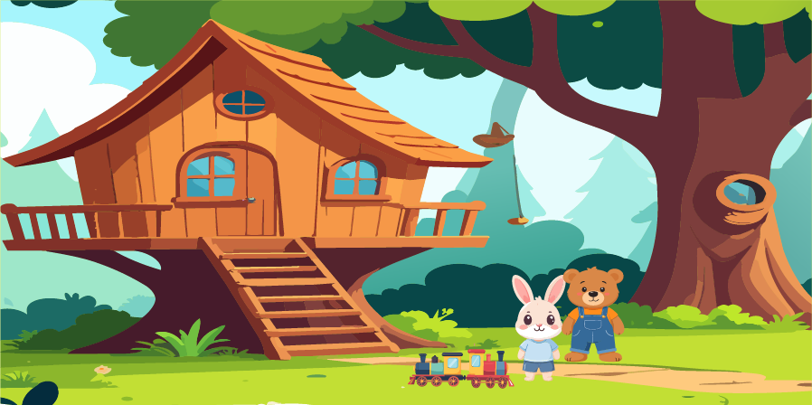

🌈 Chapter 5: The Power of Forgiveness
After listening to the wise owl's advice, Benjamin realized that friendship was more important than his broken toy train.
He decided to find Oliver and talk to him. When Benjamin returned to the treehouse, Oliver was sitting quietly, feeling sad.
"Oliver," Benjamin said gently, "I was very upset when my train broke, but I know you didn't mean to hurt me."
Oliver looked up with hopeful eyes. "I'm really sorry, Benjamin. I never wanted to break your favorite toy."
Benjamin smiled warmly. "I forgive you, Oliver. You're still my best friend!"
Oliver smiled and gave Benjamin a big hug. Together, they decided to try fixing the broken toy train.
As the sun began to set, the two friends laughed and played together, grateful that their friendship was stronger than ever.
Benjamin learned that forgiveness doesn't erase what happened, but it helps our hearts heal and makes room for love and kindness.
💛 The End — A Little Forgiveness Can Make a Big Difference! 🌈
← Previous Chapter 🏠 Back to Beginning